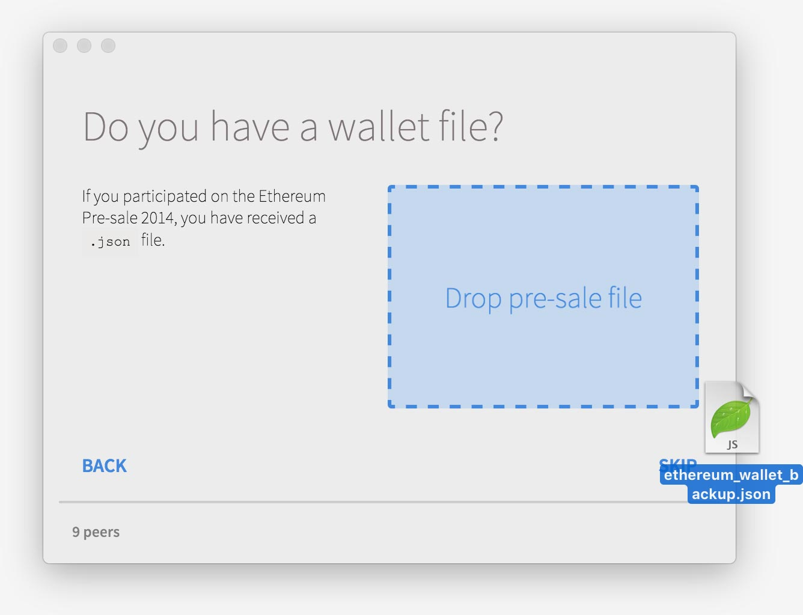

FAQ¶
以太是如何产生的？¶
2014年预售收集的捐款决定了乙以太的总供应量和发行率。 结果大致如下：
- 为预售的贡献者创建了6000万以太
- 发展基金创造了1200万美元(上述的20％)，其中大部分用于早期捐助者和开发者，其余部分用于以太坊基金会
- 每个区块(大约15秒)创建5个区块给矿区的矿工
- 2-3个以太有时会被送到另一个矿工，如果他们也能找到解决方案，但他的块不包括(称为叔叔/阿姨奖励)
请注意，在拜占庭更新执行后，采矿和叔叔奖励分别减少为3个以太和0.625-2.625个以太。
以太供应是无限的吗？¶
没有。 根据各方就2014年预售协议达成的条款，乙以太发行量每年上限为1800万乙以太(这个数字相当于初始供应量的25％)。 这意味着，虽然绝对发行是固定的，但相对通货膨胀率每年都在下降。 理论上，如果这个发行无限期地保存下来，那么在某个时候，每年创建的新代币的速率将达到每年丢失的平均数量(由于滥用，意外丢失密钥，持有者死亡等)，并且在那里
但预计这个比例不会被保留：在2018-2019年的某个时候，以太坊将从工作量证明转换到正在开发中的新的共识算法，称为卡斯帕，预计该算法效率更高，需要的采矿补贴更少。 发行的确切方法及其将发挥的功能是一个积极研究的领域，但现在可以保证的是(1)当前最大值被认为是上限，casper下的新发行不会超过它(并且是预期的,(2)无论采取什么方法最终挑选出来，它都将是一个分散的智能合约，它不会**给予任何特定人群的优惠待遇，其目的是有益于整体健康和,网络的安全.
谁需要以太？¶
有意构建将使用以太坊区块链的应用程序的开发人员。 有意构建将使用以太坊区块链的应用程序的开发人员。
我在2014年预售期间买了以太。,我如何访问它？¶
以太坊钱包包括一个简单的预售进口。下载它，它会自动提供该选项。

使用命令行¶
如果您仍然在控制台上，则通过多次按_control + C_并按Enter键退出。
然后，如果您使用 Geth 执行此操作：
geth wallet import /path/to/my/presale.wallet
或者，如果您正在使用 Eth ，请执行以下操作：
eth --import-presale /path/to/my/presale.wallet
这将提示输入密码并导入您的以太网预售帐户。 可以非交互方式使用_--password_选项，以密码文件作为以明文形式包含钱夹密码的参数。
如果这不起作用，请不要犹豫在我们的论坛，reddit或** info(at)联系我们，
如果您现在不确定自己的乙太好，但只想检查您的预售钱包是否包含在区块链中，那么请使用我们的在线平衡检查器。
阅读更多关于帐户。
我如何挖掘以太？¶
阅读更多关于帐户。 为了奖励处理合同和保护网络的计算成本，给予能够创建链上最新块的计算机的奖励。 平均每15秒将一个新区块添加到区块链中，并使用网络处理的最新交易，并且生成此区块的计算机将被授予3以太网。 由于块生成算法的本质，这个过程(产生工作证明)是有保证的
这个过程通常以加密货币术语称为mining。
CPU挖矿使用命令行¶
如果你在私人网络(如果你只是想免费测试技术，你应该)，那么任何普通CPU的普通电脑将能够运行网络，并赚取测试乙以太,只能在产生测试网络的位置进行赎回)。 这是小规模网络或私人测试的最佳选择，因为它的资源密集程度较低。 在真实(或实时测试)网络上，普通台式机(或笔记本电脑)计算机可能需要很长时间才能成功地扫描一个块并接收以太网。
在您进行任何采矿之前，您需要设置哪个地址将收到您的收入(称为“etherbase”)。 你只需要做一次。 以下是如何设置您的etherbase然后开始挖掘：
Geth:
miner.setEtherbase(eth.accounts[0]) miner.start()
Eth:
web3.admin.eth.setMiningBenefactor(web3.eth.accounts[0]) web3.admin.eth.setMining(true)
但是，在找到任何块之前，您的计算机需要经历一个名为“构建DAG”的过程。 这个DAG(定向非循环图的缩写)是采矿所需的大型数据结构(〜1GB)，旨在防止ASIC机器(“专用集成电路”)大量生产用于采矿乙以太。 它的目标是保护像您这样的矿工，以便您只需要您的家用电脑即可保持竞争力。 DAG应该花费大约10分钟时间完成，一旦完成，Geth将自动开始挖掘。
如果您已成功开采块，则会在日志中看到如下消息：
🔨 Mined block #123456
要检查您的收入，您可以通过以下方式显示您的余额：
web3.fromWei(web3.eth.getBalance(web3.eth.accounts[0]), "ether")
CPU挖矿使用命令行¶
如果您认真考虑在以太网网络上挖掘并获得真正的以太网奖励，那么您应该使用配备功能强大的图形卡的专用计算机来运行网络。
Eth说明:
如果您正在使用 Eth ，那么GPU挖掘即可开箱即用。 简单地退出控制台(多次按控制+ C然后输入)，然后打开 - GPU选项启动它：
eth -b --genesis path/to/genesis.json -i -m on -G
一旦开始，只需按照与正常CPU采矿相同的说明进行操作即可。
Geth的说明:
Geth提供的GPU挖掘目前有两种选择。 你可以阅读更详细的描述，了解如何在这个[mining post]上安装它10。
-
C++ Etherminer. 这是专业矿工的版本。 要安装它，请按照指南安装整个C ++以太坊代码。
-
Go experimental GPU branch. 它是实验性的，所以你需要从源头上构建并获取它。 这个版本专注于业余爱好者和开发人员。 要安装它，从源克隆geth，然后切换到GPU矿工分支。
有关采矿的更多信息¶
-
以太坊的工作证明算法不使用Scrypt或Sha256，而是利用EtHash，一个桥本/匕首混合。 你可以在Ethereum gitBook，采矿章节中阅读关于这个背后的理论及其设计的所有内容。 请注意，我们计划推出Serenity(未来版本，以太坊发展路线图上的一个重要里程碑)
-
Ethash工作证明算法的内存很难，每个GPU上至少需要1 GB以上的内存。 我说1+是因为DAG是一组数据，这些数据被推入和移出GPU以实现并行化，成本高昂，将从1GB开始，并将持续增长无限期。 2GB应该是全年继续采矿所需要的一个很好的近似值。
-
挖掘威力大致与[内存带宽]成比例16。 挖掘威力大致与[内存带宽]成比例16。 经验证据已经证实了这一点，R9 290x定期上榜。
-
ASIC和FPGA在财务上效率低下时受到强烈的阻碍，这在独立审计中得到了证实。 不要指望在市场上看到他们，如果你这样做，请谨慎行事。
比特币和以太之间有什么关系？¶
如果没有比特币 - 技术和货币 - 以太坊永远不可能实现，而且我们认为自己不是 乙以太应被视为“加密燃料”，这是一种令牌，其目的是为计算付费，并且不打算成为
您可以在以太坊生态系统中使用比特币的方式有很多种：
-
交易BTC用于ETH: 多家第三方公司正在努力使以太网和比特币交换尽可能简单和无缝。 如果需要的话，可以用比特币交易比特币以执行合约，并立即将其交易，以保持比特币网络的价值。 最新版本的钱包包括了以太币和比特币之间的自动转换。
-
使用挂钩派生: 以太坊是在多方之间创建复杂交易的绝佳工具。 如果你有各方信任的比特币价格来源，那么可以创建一个ethereum based currency，其价值与比特币的市场价值挂钩。 这意味着您可以将比特币交易给代币，该代币可以保证始终兑换相同数量的比特币，同时仍与其他以太坊合同完全兼容。
-
使用比特币中继转换双向挂钩: 比特币中继是一段代码，可让您将比特币链接到以太坊。 这意味着您可以使用比特币的本地有限脚本功能将比特币锁定为与以太坊合约直接相关的合约，然后可以发行以比特币为基础的以太坊代币。 继电器正在开发中，随着实施经过测试并证明是安全的，我们将在此处列出它们。
如何使用命令行发送以太网？¶
注意：以太坊地址还没有内置检查。这意味着，如果您输错地址，您的以太网将永远丢失，无需二次确认窗口。如果你的移动量很大，那么从你可以承受损失的数量开始，直到你感觉舒服为止。
以太坊有两种类型的账户：正常账户，持有只能用私钥和合约移动的乙以太，乙以太只能由自己的内部代码控制。 在本节中，我们重点关注前者。 本指南的其余部分将专注于后者。
同样，您的交易也有两种类型：发送到正常账户的交易是 ether转账，其余的是与智能合约交流*。
在你执行你的第一次以太网传输之前，你需要一个朋友来发送你的乙以太。 如果您没有任何账户，您也可以根据您以前讨论的步骤创建任意数量的新账户，并简单地在您拥有的账户之间转移资金。 假设您创建了第二个帐户来将以太网发送至：
var sender = web3.eth.accounts[0]; var recipient = web3.eth.accounts[1]; var amount = web3.toWei(0.01, "ether");
前两行用局部变量设置帐号，以便稍后访问。 将发件人和收件人地址更改为您喜欢的任何内容。 如果您要添加朋友的帐户地址，请将其放在“0xffd25e388bf07765e6d7a00d6ae83fa750460c7e”之类的引号之间。 第三行将选择的数量转换为网络的基本单位(wei)。
虽然以太名称有很多名字，但我们只用两个：“以太”和“伟”。 魏是乙以太的原子单位，是系统级别上使用的。 大多数日常交易将使用乙以太来完成，这相当于一个万亿分之一，或者一个1，然后是18个零。 因此，在发送任何交易之前，将金额转换为wei非常重要，为此，您可以使用_web3.toWei_函数。
在设置好以上变量之后，发送事务：
web3.eth.sendTransaction({from: sender, to: recipient, value: amount})
等待几秒钟，交易应该完成。 要检查帐户的余额，只需输入：
web3.eth.getBalance(recipient)
小费: 如果您使用_Geth_，那么您可以使用 eth 而不是 web3.eth 命令。
交易收据¶
无论何时您在以太坊创建交易，返回的字符串都是交易哈希。 您可以使用这些来跟踪正在进行的交易，或者使用_eth.getTransaction()_和_eth.getTransactionReceipt_过去的事务花费的天然气量。 以下是如何使用它：
var tx = web3.eth.sendTransaction({from: web3.eth.accounts[0], to: web3.eth.accounts[1], value: amount}); web3.eth.getTransaction(tx);
如果交易已被提取，您可以使用以下方式查看收据：
web3.eth.getTransactionReceipt(tx);